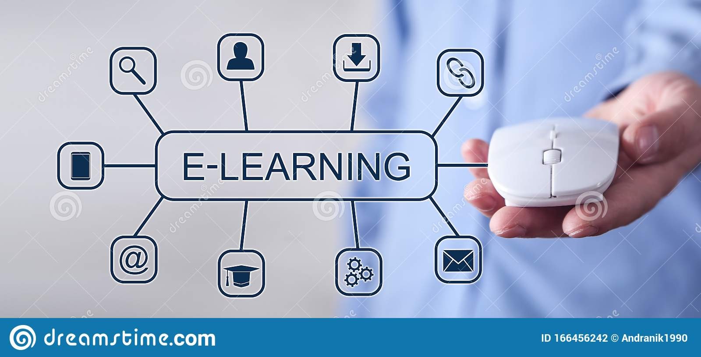

Our Programs

Himmscomp has foundational education academy for kids between the ages of 3-14. The Academy's curriculum is hybridized and covers nursery and primary syllabus. The duration of the nursery section is 3 years, while that of the primary is 6 years. IT tools and e-learning facilities will be included in the syllabus to aid the kids learning activities.
Apply
Our professional programs include: Software devlopment with(Java, Python, VB.NET,), System Networking, Computer Hardware and Software Maintenance, Data Analytics, AI systems, etc.

We run weekend programs for kids between the ages of 5-17. the weekend program employ the use of software application that improve cognition and problem solving activity of kids. the program duration is 4 months and on Saturdays.